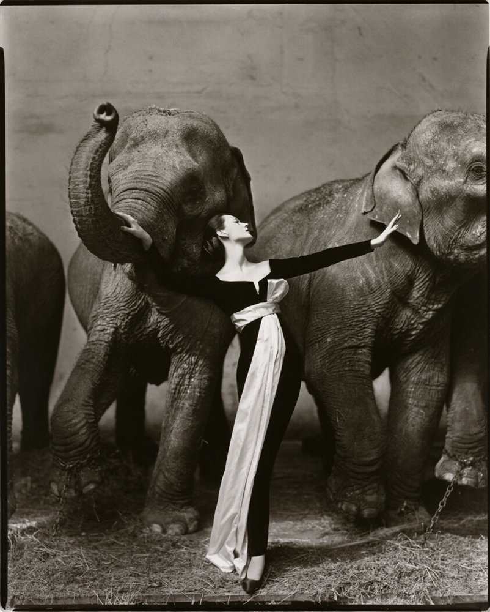

Dovima with Elephants, Evening Dress by Dior, Cirque d'Hiver, Paris
Richard Avedon · August 1955, printed 1979 · Gelatin silver print · 59.5 × 47.9 cm · Art Institute of Chicago
In copyright. Look and learn: shown for study, not for download.
The dress was the first evening gown Yves Saint Laurent designed for Christian Dior, at nineteen. Avedon, then staff photographer at Harper's Bazaar, shot it at the Cirque d'Hiver in Paris in August 1955 for a fourteen-page story on the Paris collections in the September issue. The model, Dorothy Juba, made her name from the first two letters of each of her three given names. A print of this picture sold for $1,151,976 in 2010.